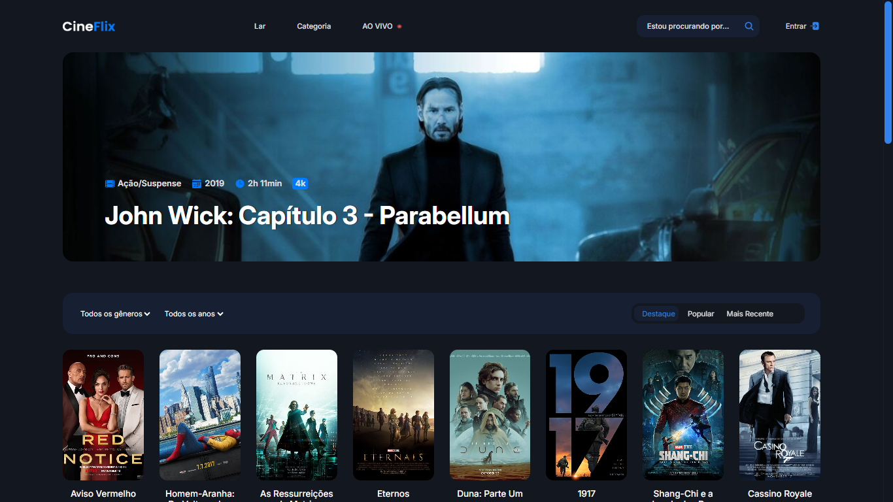

Meus Projetos

CoffeeTime
CoffeeTime é um site moderno para uma cafeteria, com cardápio interativo, informações sobre o local e design responsivo, proporcionando uma experiência fluida e acolhedora em qualquer dispositivo.

E-Commerce Borcelle
Shop Moda é um e-commerce moderno e responsivo, desenvolvido para oferecer uma experiência de compra intuitiva e agradável. O projeto inclui um design elegante, catálogo dinâmico de produtos.

Projeto NLW Connect
O projeto é um site responsivo de inscrição e indicação para eventos.
Esse é um projeto do evento NLW Connect, um dos conteúdos disponíveis para alunos da Rocketseat.

Cine Flix
Site responsivo que simula um aplicativo de filmes e séries, desenvolvido com tecnologias de front-end. Possui um design moderno e experiência de usuário otimizada, focando em navegação intuitiva e visual atrativo.